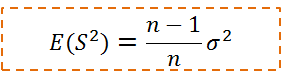
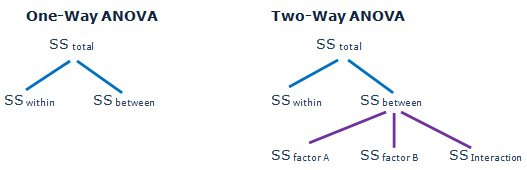
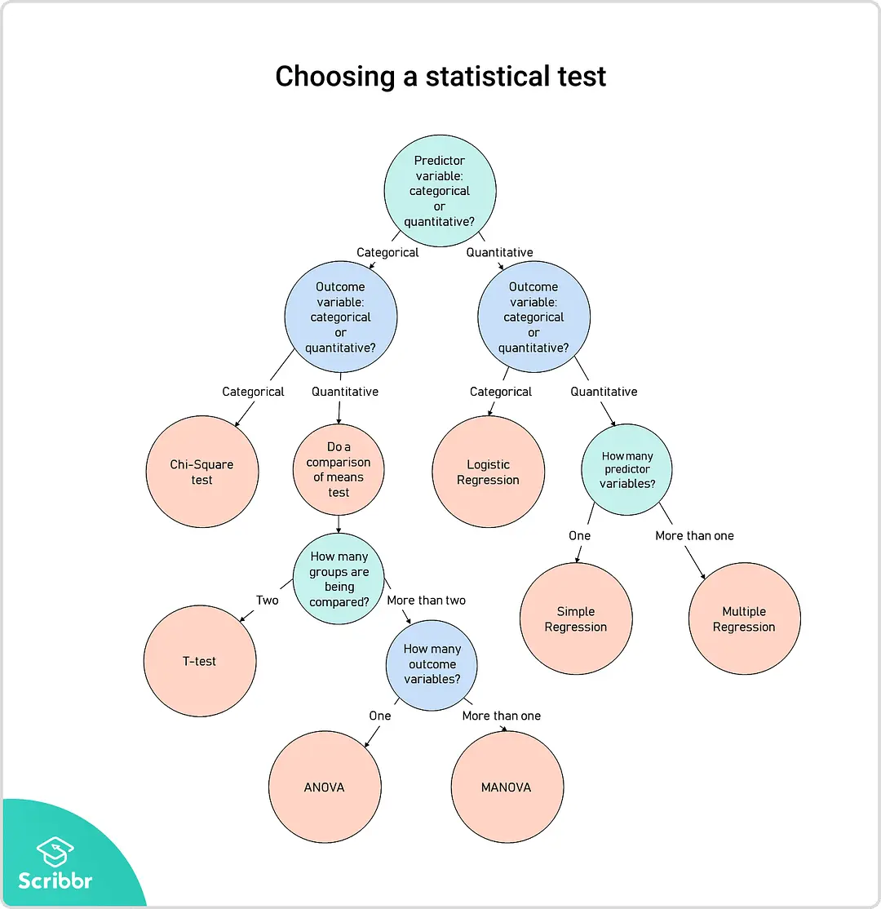

第五章 统计思维¶


Introduction
A Crash Course in Python
Visualizing Data
Linear Algebra
Statistics
Probability
Hypothesis and Inference
Gradient Descent
{kind=link}
The School of Athens by Raphael (1509–1510), fresco at the Apostolic Palace, Vatican City. https://en.wikipedia.org/wiki/Platonic_Academy
{kind=link}
The School of Athens by Raphael (1509–1510), fresco at the Apostolic Palace, Vatican City. https://en.wikipedia.org/wiki/Platonic_Academy

Plato & Typological Thinking¶
Pythagoras held that
all things are number
the cosmos comes from numerical principles.
The theory of Forms or theory of Ideas is a philosophical theory, concept, or world-view, attributed to Plato, that the physical world is not as real or true as timeless, absolute, unchangeable ideas.
{kind=link}
The physical world of becoming is an imitation of the mathematical world of being.
the realm of being 本质世界(理念世界)
perfect, eternal, and changeless forms,
sensible world of becoming 现实世界
imperfect
Population Thinking¶
Charles Robert Darwin (12 February 1809 – 19 April 1882)
favourable variations would make organisms better at surviving and passing the variations on to their offspring, while unfavourable variations would be lost.
Variation is the basis of natural seletion.
在类型逻辑中平均数是主要的内容。在总体逻辑中重要的是差异，平均数只是总体的一个特征值，是探讨真实原因的手段，而不是原因本身。
Statisticism or Damn Lies
“统计至上主义”天真地以为统计学是科学方法的完备基础。
改进测量工具
研究设计、概念化
Duncan, O.D. 1984. Notes on Social Measurement, Historical and Critical. New York: Russell Sage Fundation, p.226.
The Paradigm of Demography
Otis Dudley Duncan (1921-2004) 确立一种新的学术传统
蔑视模仿自然科学试图寻找普遍规律的做法；
记录和理解真实人口中的经验模式是第一要务；
变异是人类社会的本质。
柏拉图：变异是对本质世界的拙劣复制。
{kind=link}
The School of Athens by Raphael (1509–1510), fresco at the Apostolic Palace, Vatican City. https://en.wikipedia.org/wiki/Platonic_Academy

本体论： 世界的本质¶
“我认为自然科学是以“挖掘”本质的世界中的真理为最终目的，这也是其精华所在。而社会科学是以“了解”形成的世界为最终目的。历史上很多人想在社会科学领域找到一种真理，能够适用于各个方面，并且做过许多这方面的尝试。我认为社会科学不应该是这样的。在社会科学中，我们的目的是要了解现实世界，而不是去挖掘永恒的真理。这可能和你们的想象不一样。……既然差异是世界的本质，那差异就应该是研究的对象。” — 谢宇
高尔顿认为凯特莱的社会物理学用处不大，普通人不是万能的。
左手入冰，右手入火，平均温度？
高尔顿说（社会）科学的探索必须关注变异和共变。
variation & Co-variation
The measurements have both
a central tendency, or mean, and
a spread around this central value, or variance.

In the late 1860s, Galton conceived of a measure to quantify normal variation:
the standard deviation.
“Regression to mediocrity”
方法论： 使用什么方法¶
谢宇：“社会科学之所以复杂，是因为我们运用的数据是通过观察所得，而观察所得的数据必然受到外来因素的影响，这些外来因素都可能解释你的数据。“
自然科学使用实验来隔离外来因素的影响；
“社会科学可以使用统计排除一些外来影响，但你不能排除所有的外来因素”。
Three Basic Principles of Social Science Research¶
Variability Principle
Social Grouping Principle
Social Context Principle
Statistics for Describing Data¶
The mathematics and techniques with which we understand data.
from collections import Counter
import math
import numpy as np
import matplotlib.pyplot as plt
import matplotlib
matplotlib.style.use('ggplot')
def dot(v, w):
"""v_1 * w_1 + ... + v_n * w_n"""
return sum(v_i * w_i for v_i, w_i in zip(v, w))
def sum_of_squares(v):
"""v_1 * v_1 + ... + v_n * v_n"""
return dot(v, v)
daily_minutes = [1,68.77,51.25,52.08,38.36,44.54,57.13,
51.4,41.42,31.22,34.76,54.01,38.79,
47.59,49.1,27.66,41.03,36.73,48.65,28.12,
46.62,35.57,32.98,35,26.07,23.77,39.73,
40.57,31.65,31.21,36.32,20.45,21.93,26.02,
27.34,23.49,46.94,30.5,33.8,24.23,21.4,27.94,
32.24,40.57,25.07,19.42,22.39,18.42,46.96,23.72,
26.41,26.97,36.76,40.32,35.02,29.47,30.2,31,
38.11,38.18,36.31,21.03,30.86,36.07,28.66,
29.08,37.28,15.28,24.17,22.31,30.17,25.53,
19.85,35.37,44.6,17.23,13.47,26.33,35.02,
32.09,24.81,19.33,28.77,24.26,31.98,25.73,
24.86,16.28,34.51,15.23,39.72,40.8,26.06,
35.76,34.76,16.13,44.04,18.03,19.65,32.62,
35.59,39.43,14.18,35.24,40.13,41.82,35.45,
36.07,43.67,24.61,20.9,21.9,18.79,27.61,27.21,
26.61,29.77,20.59,27.53,13.82,33.2,25,33.1,36.65,
18.63,14.87,22.2,36.81,25.53,24.62,26.25,18.21,
28.08,19.42,29.79,32.8,35.99,28.32,27.79,35.88,29.06,
36.28,14.1,36.63,37.49,26.9,18.58,38.48,24.48,
18.95,33.55,14.24,29.04,32.51,25.63,22.22,19,
32.73,15.16,13.9,27.2,32.01,29.27,33,13.74,20.42,
27.32,18.23,35.35,28.48,9.08,24.62,20.12,35.26,
19.92,31.02,16.49,12.16,30.7,31.22,34.65,13.13,
27.51,33.2,31.57,14.1,33.42,17.44,10.12,24.42,
9.82,23.39,30.93,15.03,21.67,31.09,33.29,22.61,
26.89,23.48,8.38,27.81,32.35,23.84]
num_friends = [100,49,41,40,25,21,21,19,19,18,
18,16,15,15,15,15,14,14,13,13,
13,13,12,12,11,10,10,10,10,10,
10,10,10,10,10,10,10,10,10,10,
9,9,9,9,9,9,9,9,9,9,9,9,9,9,9,
9,9,9,8,8,8,8,8,8,8,8,8,8,8,8,8
,7,7,7,7,7,7,7,7,7,7,7,7,7,7,7,
6,6,6,6,6,6,6,6,6,6,6,6,6,6,6,6,
6,6,6,6,6,6,5,5,5,5,5,5,5,5,5,5,
5,5,5,5,5,5,5,4,4,4,4,4,4,4,4,4,
4,4,4,4,4,4,4,4,4,4,4,3,3,3,3,
3,3,3,3,3,3,3,3,3,3,3,3,3,3,3,3,
2,2,2,2,2,2,2,2,2,2,2,2,2,2,2,2,2,
1,1,1,1,1,1,1,1,1,1,1,1,1,1,1,
1,1,1,1,1,1,1]
Distribution and Histogram¶
time_counts = Counter(map(int, daily_minutes))
xs = range(69)
ys = [time_counts[x] for x in xs]
plt.bar(xs, ys)
plt.axis([0,69,0,14])
plt.title("Histogram of Time Counts")
plt.xlabel("# of Time")
plt.ylabel("# of people")
plt.show()
friend_counts = Counter(num_friends)
xs = range(101)
ys = [friend_counts[x] for x in xs]
plt.bar(xs, ys)
plt.axis([0,101,0,25])
plt.title("Histogram of Friend Counts")
plt.xlabel("# of friends")
plt.ylabel("# of people")
plt.show()
We can also draw them with plt.hist
plt.hist(daily_minutes, bins = 50)
plt.xlabel('Daily minutes')
plt.ylabel('Frequency')
plt.show()
plt.hist(num_friends, bins= 50)
plt.xlabel("# of friends")
plt.ylabel('Frequency')
plt.show()
Unfortunately, this chart is still too difficult to interpret.
So you start generating some statistics.
From Max to Min¶
num_points = len(num_friends) # 204
largest_value = max(num_friends) # 100
smallest_value = min(num_friends) # 1
print(num_points, largest_value, smallest_value)
204 100 1
sorted_values = sorted(num_friends)
smallest_value = sorted_values[0] # 1
second_smallest_value = sorted_values[1] # 1
second_largest_value = sorted_values[-2] # 49
Mean, Median, Mode, and Quantile¶
def mean(x):
return sum(x) / len(x)
print("mean(num_friends)", mean(num_friends))
mean(num_friends) 7.333333333333333
np.mean(num_friends)
7.333333333333333
def median(v):
"""finds the 'middle-most' value of v"""
n = len(v)
sorted_v = sorted(v)
midpoint = n // 2
if n % 2 == 1:
# if odd, return the middle value
return sorted_v[midpoint]
else:
# if even, return the average of the middle values
lo = midpoint - 1
hi = midpoint
return (sorted_v[lo] + sorted_v[hi]) / 2
print("median(num_friends)", median(num_friends))
median(num_friends) 6.0
np.median(num_friends)
6.0
def quantile(x, p):
"""returns the pth-percentile value in x"""
p_index = int(p * len(x))
return sorted(x)[p_index]
print("quantile(num_friends, 0.10)", quantile(num_friends, 0.10))
print("quantile(num_friends, 0.25)", quantile(num_friends, 0.25))
print("quantile(num_friends, 0.50)", quantile(num_friends, 0.50))
print("quantile(num_friends, 0.75)", quantile(num_friends, 0.75))
print("quantile(num_friends, 0.90)", quantile(num_friends, 0.90))
quantile(num_friends, 0.10) 1
quantile(num_friends, 0.25) 3
quantile(num_friends, 0.50) 6
quantile(num_friends, 0.75) 9
quantile(num_friends, 0.90) 13
np.percentile(num_friends, 90)
13.0
def mode(x):
"""returns a list, might be more than one mode"""
counts = Counter(x)
max_count = max(counts.values())
return [x_i for x_i, count in counts.items()
if count == max_count]
print("mode(num_friends)", mode(num_friends))
mode(num_friends) [6, 1]
np.argmax(np.bincount(num_friends))
# Only the first occurrence is returned.
1
np.bincount(num_friends)
array([ 0, 22, 17, 20, 20, 17, 22, 15, 13, 18, 15, 1, 2, 4, 2, 4, 1,
0, 2, 2, 0, 2, 0, 0, 0, 1, 0, 0, 0, 0, 0, 0, 0, 0,
0, 0, 0, 0, 0, 0, 1, 1, 0, 0, 0, 0, 0, 0, 0, 1, 0,
0, 0, 0, 0, 0, 0, 0, 0, 0, 0, 0, 0, 0, 0, 0, 0, 0,
0, 0, 0, 0, 0, 0, 0, 0, 0, 0, 0, 0, 0, 0, 0, 0, 0,
0, 0, 0, 0, 0, 0, 0, 0, 0, 0, 0, 0, 0, 0, 0, 1])
from scipy import stats
stats.mode(num_friends, axis=None)
ModeResult(mode=array([1]), count=array([22]))
def data_range(x):
return max(x) - min(x)
print("data_range(num_friends)", data_range(num_friends))
data_range(num_friends) 99
def interquartile_range(x):
return quantile(x, 0.75) - quantile(x, 0.25)
print("interquartile_range(num_friends)", interquartile_range(num_friends))
interquartile_range(num_friends) 6
{kind=link}
import seaborn as sns
sns.set(style="ticks", palette="pastel")
sns.boxplot(y = daily_minutes);
import seaborn as sns
sns.set(style="ticks", palette="pastel")
sns.boxplot(y = num_friends);
Variance and Standard Deviation¶

def de_mean(x):
"""translate x by subtracting its mean
so the result has mean 0"""
x_bar = mean(x)
return [x_i - x_bar for x_i in x]
def variance(x):
"""assumes x has at least two elements"""
n = len(x)
deviations = de_mean(x)
return sum_of_squares(deviations) / (n - 1)
print("variance(num_friends)", variance(num_friends))
variance(num_friends) 81.54351395730716
print(np.var(num_friends))
81.14379084967321
def standard_deviation(x):
return math.sqrt(variance(x))
print("standard_deviation(num_friends)", standard_deviation(num_friends))
standard_deviation(num_friends) 9.03014473623248
np.std(num_friends)
9.007984838446012
Covariance, Correlation, and Scatter Plot¶
matplotlib.style.use('ggplot')
plt.scatter(num_friends, daily_minutes,
alpha = .1)
plt.xlabel('number of friends')
plt.ylabel('daily minutes')
plt.title('outliers')
plt.show()
import seaborn as sns
sns.set(style="white")
g = sns.jointplot(num_friends, daily_minutes,
kind="kde", height=7, space=0)
def covariance(x, y):
n = len(x)
return dot(de_mean(x), de_mean(y)) / (n - 1)
print("covariance(num_friends, daily_minutes)", covariance(num_friends, daily_minutes))
covariance(num_friends, daily_minutes) 22.425435139573064
np.cov(num_friends, daily_minutes)
array([[ 81.54351396, 22.42543514],
[ 22.42543514, 100.78589895]])
def correlation(x, y):
stdev_x = standard_deviation(x)
stdev_y = standard_deviation(y)
if stdev_x > 0 and stdev_y > 0:
return covariance(x, y) / stdev_x / stdev_y
else:
return 0 # if no variation, correlation is zero
print("correlation(num_friends, daily_minutes)", correlation(num_friends, daily_minutes))
correlation(num_friends, daily_minutes) 0.24736957366478218
import seaborn as sns
sns.set(style="ticks", palette="pastel")
sns.boxplot(x=num_friends, y=daily_minutes)
sns.despine(offset=10, trim=True)
np.corrcoef(num_friends, daily_minutes)
array([[1. , 0.24736957],
[0.24736957, 1. ]])
from scipy.stats.stats import pearsonr
pearsonr(num_friends, daily_minutes)
(0.24736957366478224, 0.0003610473973450633)
outlier = num_friends.index(100) # index of outlier
num_friends_good = [x
for i, x in enumerate(num_friends)
if i != outlier]
daily_minutes_good = [x
for i, x in enumerate(daily_minutes)
if i != outlier]
print("correlation(num_friends_good, daily_minutes_good)", \
correlation(num_friends_good, daily_minutes_good))
correlation(num_friends_good, daily_minutes_good) 0.5736792115665573
Regression Analysis¶
slope, intercept, r_value, p_value, std_err = stats.linregress(num_friends_good,daily_minutes_good)
print(slope, intercept, r_value, p_value)
xi = range(1,np.max(num_friends_good)+1)
# plotting the line
matplotlib.style.use('ggplot')
y_fit = slope*xi+intercept
plt.scatter(num_friends,daily_minutes)
plt.plot(xi,y_fit,'r-', label = '$Linear\,Fit$')
plt.xlabel('$x_i$', fontsize = 20)
plt.ylabel('$y$', fontsize = 20)
plt.legend(loc=0,numpoints=1,fontsize=13)
plt.show()
0.9038659456058652 22.947552413469026 0.5736792115665575 3.676825862770313e-19
比较均值：T检验¶
income_male = [1000, 1500, 2000, 3000, 2500, 4000, 5000, 3500]
income_female=[6000, 6200, 7000, 7100, 9000, 10000, 12000]
income_male_median = np.median(income_male)
income_female_median = np.median(income_female)
print(income_male_median, income_female_median)
2750.0 7100.0
# Plot the boxplot to see
# minimum value, 25%,50%,75% percentile, maximum value
%matplotlib inline
import matplotlib.pyplot as plt
plt.boxplot([income_male, income_female], # meanline=True,showmeans=True,
labels = ['$male$', '$female$'])
plt.show()
from scipy import stats
stats.ttest_ind(income_male, income_female)
Ttest_indResult(statistic=-5.757056463981614, pvalue=6.631425817426509e-05)
单因素方差分析（one-way ANOVA）¶
ANOVA: Analysis of Variance
假设：有k组实验数据，彼此之间相互独立且服从正态分布，均值分别为\(\mu_1,\mu_2,...\mu_k\)，方差都为\(\sigma^2\)
H0:假设两组或者多组数据之间有相同的均值
H1:至少有两个均值不相等

https://en.wikipedia.org/wiki/One-way_analysis_of_variance
Consider an experiment to study the effect of three different levels of a factor on a response (e.g. three levels of a fertilizer on plant growth). If we had 6 observations for each level, we could write the outcome of the experiment in a table like this, where a1, a2, and a3 are the three levels of the factor being studied.
a1 a2 a3
6 8 13
8 12 9
4 9 11
5 11 8
3 6 7
4 8 12
The null hypothesis, denoted H0, for the overall F-test for this experiment would be that all three levels of the factor produce the same response, on average.
To calculate the F-ratio:
Step 1: Calculate the mean within each group:
\begin{aligned}{\overline {Y}}{1}&={\frac {1}{6}}\sum Y{1i}={\frac {6+8+4+5+3+4}{6}}=5\{\overline {Y}}{2}&={\frac {1}{6}}\sum Y{2i}={\frac {8+12+9+11+6+8}{6}}=9\{\overline {Y}}{3}&={\frac {1}{6}}\sum Y{3i}={\frac {13+9+11+8+7+12}{6}}=10\end{aligned}
Step 2: Calculate the overall mean: \(\overline{Y}=\frac{\sum _{i} \overline{Y_i}}{a}=\frac {\overline{Y_1}+\overline{Y_2}+\overline{Y_3}}{a}=\frac {5+9+10}{3}=8\) where a is the number of groups.
Step 3: Calculate the “between-group” sum of squared differences:
\begin{aligned}S_{B}&=n({\overline {Y}}{1}-{\overline {Y}})^{2}+n({\overline {Y}}{2}-{\overline {Y}})^{2}+n({\overline {Y}}_{3}-{\overline {Y}})^{2}\[8pt]&=6(5-8)^{2}+6(9-8)^{2}+6(10-8)^{2}=84\end{aligned}
where n is the number of data values per group.
The between-group degrees of freedom is one less than the number of groups \(f_{b}=3-1=2\)
The between-group mean square value is \(MS_{B}=84/2=42\)
Step 4: Calculate the “within-group” sum of squares. Begin by centering the data in each group
a1 a2 a3
6−5=1 8−9=−1 13−10=3
8−5=3 12−9=3 9−10=−1
4−5=−1 9−9=0 11−10=1
5−5=0 11−9=2 8−10=−2
3−5=−2 6−9=−3 7−10=−3
4−5=−1 8−9=−1 12−10=2
The within-group sum of squares:
\begin{aligned}S_{W}=&(1)^{2}+(3)^{2}+(-1)^{2}+(0)^{2}+(-2)^{2}+(-1)^{2}+\&(-1)^{2}+(3)^{2}+(0)^{2}+(2)^{2}+(-3)^{2}+(-1)^{2}+\&(3)^{2}+(-1)^{2}+(1)^{2}+(-2)^{2}+(-3)^{2}+(2)^{2}= 68\end{aligned}
The within-group degrees of freedom is
\(f_{W}=a(n-1)=3(6-1)=15\)
Thus the within-group mean square value is
\(MS_{W}=S_{W}/f_{W}=68/15\approx 4.5\)
Step 5: The F-ratio is
\( F={\frac {MS_{B}}{MS_{W}}}\approx 42/4.5\approx 9.3\)
\(F_{crit}(2,15) = 3.68\) at α = 0.05. The results are significant at the 5% significance level.

a1 = [6, 8, 4, 5, 3, 4]
a2 = [8, 12, 9, 11, 6, 8]
a3 = [13, 9, 11, 8, 7, 12]
f,p = stats.f_oneway(a1, a2, a3)
print(f,p)
9.264705882352942 0.0023987773293929083
# 5个地方的蚌壳长度的均值是否都一样呢？
from scipy import stats
tillamook = [0.0571, 0.0813, 0.0831, 0.0976, 0.0817, 0.0859, 0.0735, 0.0659, 0.0923, 0.0836]
newport = [0.0873, 0.0662, 0.0672, 0.0819, 0.0749, 0.0649, 0.0835,0.0725]
petersburg = [0.0974, 0.1352, 0.0817, 0.1016, 0.0968, 0.1064, 0.105]
magadan = [0.1033, 0.0915, 0.0781, 0.0685, 0.0677, 0.0697, 0.0764, 0.0689]
tvarminne = [0.0703, 0.1026, 0.0956, 0.0973, 0.1039, 0.1045]
plt.boxplot([tillamook, newport, petersburg, magadan, tvarminne], # meanline=True,showmeans=True,
labels = ['tillamook', 'newport', 'petersburg', 'magadan', 'tvarminne'])
plt.show()
f,p = stats.f_oneway(tillamook, newport, petersburg, magadan, tvarminne)
print(f,p)
7.121019471642447 0.0002812242314534544
from statsmodels.formula.api import ols
from statsmodels.stats.anova import anova_lm
import pandas as pd
df = []
labels = ['tillamook', 'newport', 'petersburg', 'magadan', 'tvarminne']
for k, i in enumerate([tillamook, newport, petersburg, magadan, tvarminne]):
for j in i:
df.append([labels[k],j])
df = pd.DataFrame(df, columns = ['treatment', 'value'])
model = ols('value ~ C(treatment)', df).fit()
print(anova_lm(model))
df sum_sq mean_sq F PR(>F)
C(treatment) 4.0 0.004520 0.001130 7.121019 0.000281
Residual 34.0 0.005395 0.000159 NaN NaN
Two-way ANOVA¶
ANOVA with interaction
Measurement of fetal head circumference hs, by four observers in three fetuses.
# https://raw.githubusercontent.com/thomas-haslwanter/statsintro_python/master/ipynb/Data/data_altman/altman_12_6.txt
df = pd.read_csv('../data/altman_12_6.txt', names=['hs', 'fetus', 'observer'])
df.head()
| hs | fetus | observer | |
|---|---|---|---|
| 0 | 14.3 | 1 | 1 |
| 1 | 14.0 | 1 | 1 |
| 2 | 14.8 | 1 | 1 |
| 3 | 13.6 | 1 | 2 |
| 4 | 13.6 | 1 | 2 |
from statsmodels.graphics.api import interaction_plot
plt.figure(figsize=(8,6))
fig = interaction_plot(df['fetus'], df['observer'], df['hs'],
ms=10, ax=plt.gca())
formula = 'hs ~ C(fetus) + C(observer) + C(fetus):C(observer)'
lm = ols(formula, df).fit()
print(anova_lm(lm))
df sum_sq mean_sq F PR(>F)
C(fetus) 2.0 324.008889 162.004444 2113.101449 1.051039e-27
C(observer) 3.0 1.198611 0.399537 5.211353 6.497055e-03
C(fetus):C(observer) 6.0 0.562222 0.093704 1.222222 3.295509e-01
Residual 24.0 1.840000 0.076667 NaN NaN
卡方检验 A chi-squared test¶
https://en.wikipedia.org/wiki/Chi-squared_test
Suppose we look at the House of Representatives for the 113th Congress. This data is taken from www.senate.gov.
Republican |
Democrat |
Total |
|
|---|---|---|---|
Male |
215 |
143 |
358 |
Female |
19 |
64 |
83 |
Total |
234 |
207 |
441 |
also referred to as χ² test (or chi-square test), is any statistical hypothesis test in which the sampling distribution of the test statistic is a chi-square distribution when the null hypothesis is true.
A chi-squared test can then be used to reject the null hypothesis that the data are independent.
Test statistics that follow a chi-squared distribution arise from an assumption of independent normally distributed data, which is valid in many cases due to the central limit theorem.
Chi-squared tests are often constructed from a sum of squared errors, or through the sample variance.
Chi-Square Formula¶
\(Χ^2 = \frac{\sum (O − E)^2}{E} \)
\(\sum\) means to sum up (see Sigma Notation)
O = each Observed (actual) value
E = each Expected value
So we calculate \((O−E)^2/E\) for each pair of observed and expected values then sum them all up.
total = 441
republican_prob = 234.0/441
democrat_prob = 207.0/441
male_prob = 358.0/441
female_prob = 83.0/441
male_republican_expected = republican_prob * male_prob * total
male_democrat_expected = democrat_prob * male_prob * total
female_republican_expected = republican_prob * female_prob * total
female_democrat_expected = democrat_prob * female_prob * total
print(male_republican_expected, male_democrat_expected,'\n',
female_republican_expected, female_democrat_expected)
189.9591836734694 168.04081632653063
44.04081632653061 38.95918367346939
Under the null hypothesis, it has approximately a chi-square distribution whose number of degrees of freedom are
(number of rows−1)(number of columns−1)=(2−1)(2−1)=1.
Then in that “cell” of the table, we have
The sum of these quantities over all of the cells is the Chi-square statistic.
3.30093271 + 13.12279349 + 222.36009343 + 277.84184475 = 37.37
Observed
Republican |
Democrat |
|
|---|---|---|
Male |
215 |
143 |
Female |
19 |
64 |
Expected
Republican |
Democrat |
|
|---|---|---|
Male |
189.9 |
168.0 |
Female |
44.0 |
38.9 |
Chi Square
Republican |
Democrat |
|
|---|---|---|
Male |
\(\frac{(215-189.9)^2}{189.9} \) |
\(\frac{(143-168.0)^2}{168.0} \) |
Female |
\(\frac{(19-44.0)^2}{44.0}\) |
\(\frac{(64-38.9)^2}{38.9}\) |
observed = [215, 143, 19, 64]
expected = [male_republican_expected, male_democrat_expected,
female_republican_expected, female_democrat_expected]
# The sum of these quantities over all of the cells is the test statistic.
chi_square = np.sum( [(observed[k] - i)**2/i for k, i in enumerate(expected)] )
print(chi_square)
37.365036593000426
import scipy
house = [ [ 215, 143 ], [ 19, 64 ] ]
chi2, p, ddof, expected = scipy.stats.chi2_contingency( house, correction = False)
msg = "Test Statistic: {}\np-value: {}\nDegrees of Freedom: {}\n"
print( msg.format( chi2, p, ddof ) )
print( expected )
Test Statistic: 37.36503659300042
p-value: 9.796267016333982e-10
Degrees of Freedom: 1
[[189.95918367 168.04081633]
[ 44.04081633 38.95918367]]
scipy.stats.chi2_contingency?
Suppose there is a city of 1 million residents with four neighborhoods: A, B, C, and D.
A random sample of 650 residents of the city is taken and their occupation is recorded as “blue collar”, “white collar”, or “no collar”.
The null hypothesis is that each person’s neighborhood of residence is independent of the person’s occupational classification. The data are tabulated as:
A |
B |
C |
D |
Total |
|
|---|---|---|---|---|---|
White collar |
90 |
60 |
104 |
95 |
349 |
Blue collar |
30 |
50 |
51 |
20 |
151 |
No coloar |
30 |
40 |
45 |
35 |
150 |
Total |
150 |
150 |
200 |
150 |
650 |
住在A社区的概率：Let us take the sample living in neighborhood A, 150/650, to estimate what proportion of the whole 1 million people live in neighborhood A.
白领的概率：Similarly we take 349/650 to estimate what proportion of the 1 million people are white-collar workers.
住在A社区的白领的数量：By the assumption of independence under the hypothesis we should “expect” the number of white-collar workers in neighborhood A to be
Then in that “cell” of the table, we have
The sum of these quantities over all of the cells is the test statistic.
Under the null hypothesis, it has approximately a chi-square distribution whose number of degrees of freedom are
(number of rows−1)(number of columns−1)=(3−1)(4−1)=6.
house = [ [ 90, 60, 104, 95 ], [ 30, 50, 51, 20 ], [30, 40, 45, 35] ]
chi2, p, ddof, expected = scipy.stats.chi2_contingency( house )
msg = "Test Statistic: {}\n p-value: {}\n Degrees of Freedom: {}\n"
print( msg.format( chi2, p, ddof ) )
print( expected )
Test Statistic: 24.5712028585826
p-value: 0.0004098425861096696
Degrees of Freedom: 6
[[ 80.53846154 80.53846154 107.38461538 80.53846154]
[ 34.84615385 34.84615385 46.46153846 34.84615385]
[ 34.61538462 34.61538462 46.15384615 34.61538462]]


Social Physics: Taking Physics as a Role Model¶
French social thinker Henri de Saint-Simon 1803 described the idea of describing society using laws similar to those of the physical and biological sciences.
His student and collaborator was Auguste Comte, a French philosopher, the founder of sociology, who first defined the term
Computational Social Science
https://en.wikipedia.org/wiki/Social_physics
Lambert Adolphe Jacques Quetelet (1796-1874) introducing statistical methods to the social sciences in his book titled Essays on Social Physics,
the concept of the “average man”
characterized by the mean values
follow a normal distribution.
He collected data about many such variables.
developed the body mass index scale